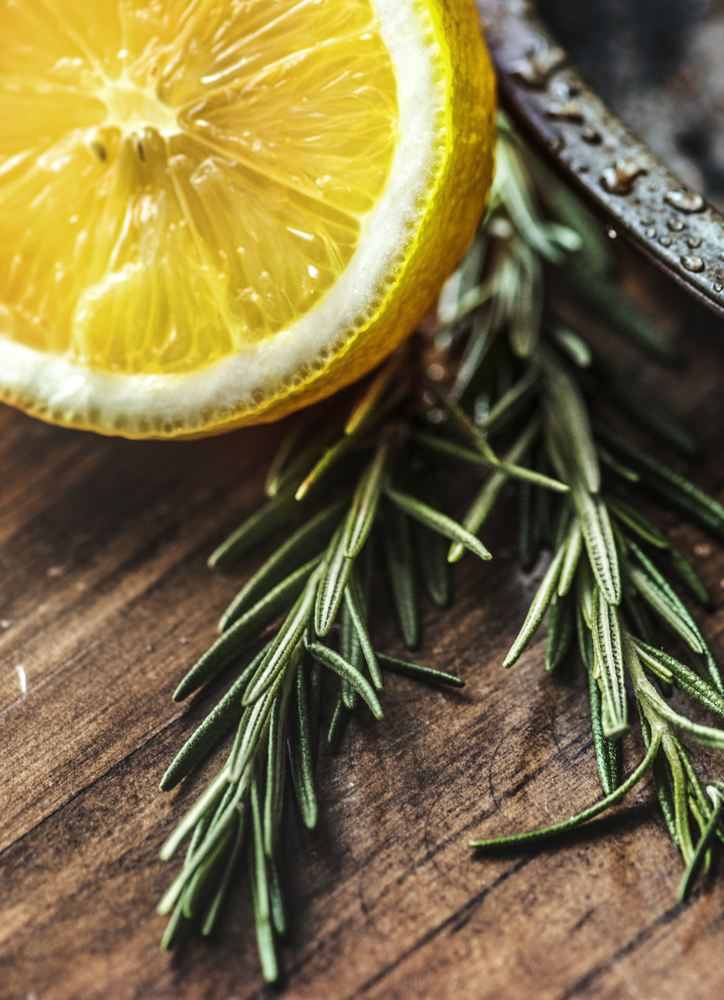
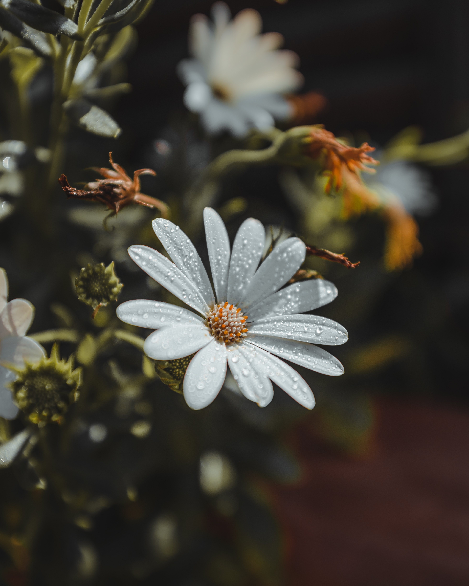

Your body tells a complete story

Our root-cause approach combines individualized support and botanical self-care to reveal the path to healing your body has been showing all along.
Discover the Wombman Method

Our root-cause approach combines individualized support and botanical self-care to reveal the path to healing your body has been showing all along.
Discover the Wombman Method
Born from a personal journey of womb healing and self-discovery, Wombman was created from a simple belief: healing begins with the relationship we have with ourselves.
We believe women deserve a space to slow down, listen to their bodies, honor their emotions, and care for themselves with intention.
Through our herbal products, rituals and intentional self-care practices, we create gentle pathways for women to pause, reflect, release, and reconnect.
“Wombman is not about fixing a woman or telling her that she is broken. It is about reminding her of the wisdom within her, encouraging her to trust herself, and creating space for her to return to herself.”
Gentle pathways to pause, exhale, and let go of stored tension, physical discomfort, and emotional exhaustion carried in your sacred center.
Create space for renewal. Intentionally caring for yourself and creating moments of physical and emotional refreshment.
Return back to yourself; nurturing yourself through rest, nourishment, self-love, healthy boundaries, connection, and joy.
Two intentional formulations crafted to soothe your pelvic center and restore whole-body ease.
Artisanal Herbal Infusion for Pelvic Warmth & Cyclical Ease
A carefully prepared blend of aromatic botanicals created for a traditional womb-focused steam ritual. Beyond the physical warmth and herbal aroma, yoni steaming can be approached as a sacred practice of release, cleansing, reflection, and reconnection with yourself.
“Your steam is more than a ritual. It is a moment to pause, listen inward, and reconnect with yourself.”
1. Bring 4–6 cups of filtered water to a gentle boil.
2. Add a small handful of WOMB-man blend, cover, and steep for 10 minutes.
3. Place vessel securely under a perforated steam stool or chair.
4. Wrap a warm blanket around your waist and relax over the gentle steam for 15–20 minutes.

Pure Mineral Crystals & Restorative Botanical Infusion
A carefully prepared blend of sea salt and whole botanical herbs, created to support your spiritual bath rituals, cleansing, grounding, relaxation, and intentional self-care.
1. Fill your tub or foot basin with warm, comforting water.
2. Add 3–4 tablespoons (or a generous handful) of Wombman SACRED SALT BATH.
3. Swirl the water gently until mineral crystals and aromatic botanicals dissolve.
4. Immerse yourself, breathe deeply, and soak undisturbed for 20–30 minutes.
Five potent, wildcrafted organic herbs selected for their elemental warmth, soothing chemistry, and feminine resonance.





More than a product — an invitation to return home to your body.
Instead of numbing symptoms, soothing botanical steam warmth penetrates deeply to soften pelvic muscles, ease cramping, and support your natural cyclical flow.
Zero synthetic fragrances, fillers, artificial dyes, or chemical extracts. Only pure, earth-grown botanicals formulated in sacred harmony.
Transforms your bathroom into a peaceful sanctuary. A gentle invitation to disconnect from daily noise, exhale, and honor yourself.
Lovingly blended in Kenya with high-potency botanicals, preserving their rich volatile oils and therapeutic vitality.

“Womb healing was not simply about rituals—it was about developing a relationship with yourself.”
A personal journey of womb healing, feminine energy, and learning to come home to myself.
For years, I struggled with painful periods. Every month, I dreaded my cycle—the cramps, discomfort, and exhaustion. I relied on painkillers and simply pushed through, believing this was something I had to live with.
During one of my therapy sessions, I spoke about my period pain and was introduced to the sacral chakra, rituals, and practices focused on reconnecting with the body. That conversation became the beginning of my womb healing journey.
I started learning, researching, and exploring womb healing. I began with guided womb release and eventually went deeper into ancestral work, feminine energy, and my relationship with myself.
Along the way, I experienced a profound shift. My periods became painless, but beyond that, I felt more connected to my body, my femininity, and myself.
I began to understand that womb healing was not simply about rituals—it was about developing a relationship with yourself.
And then came the calling to share what I had discovered with other women. That calling became Wombman — a space born from my own journey, created to remind women to slow down, listen to their bodies, honor themselves, and reconnect with who they are.
Through rituals, herbs, and intentional self-care, Wombman is an invitation to come home to yourself. This is where my journey began. And perhaps yours begins here too.
Read real stories and experiences shared by women in our community.
“There is too much to say yet I am speechless. Thank you for what you do and cheers to the women we are becoming. These herbs work wonders.”
“My cycle used to bring so much discomfort every month. After using the Sacred Womb Steam, I felt an unbelievable sense of lightness and ease. It has become my favorite monthly ritual.”
“The Sacred Salt Bath is absolute magic after a long, exhausting day. The soothing aroma fills the whole space and grounds your spirit immediately. So grateful for Wombman.”
“Honestly, these herbs changed my whole perspective on listening to my body. It is not just self-care—it feels like returning home to yourself.”
“I’ve tried so many wellness products over the years, but nothing comes close to the pure intention and quality of Wombman. You can truly feel the love in every blend.”
Everything you need to know about preparing your herbal steam ritual.

Honor your body with the soothing warmth of handcrafted organic botanicals. Order your jar today via WhatsApp.